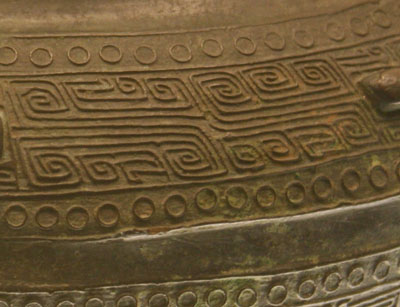
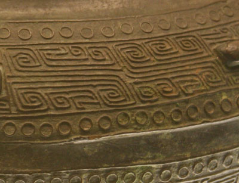

{kind=link}
Bronze was an important material for ceremonial vessels, such as the wine and food vessels shown below. The vessels played a key role in these ceremonies used for offerings to dieties and ancestors. The markings on the vessels had a connection with these ceremonies and the religious beliefs of the people at the time, especially mysterious and ferocious animals.

Chinese discovered how to brew alcoholic drinks in the Neolithic Age. The jia, shown in the picture above, is a relatively large vessel for heating wine.

The jia and gui above show uses of the animal mask or taotie design on food and wine vessels.
 

{kind=link}
A pou 瓿 is an ancient vessel used for holding water or wine. It was in common use from the Shang to the Warring States Period. It is similar to a zun 尊 but shorter. Pou are usually round but sometimes square and have restricted opening with a wide shoulder, take a lid, and have a round base. Some have handles and some do not.

Pou are frequently decorated with nipples, as shown above and below, and animal mask designs.

The yu, shown below, is a water container with a deep belly.
{kind=link}
The ding 鼎, the most important bronzeware artifact, was a central artifact used in ceremonies, especially sacrifices and court banquets. It's use was strictly regulated in the Shang and Western Zhou dynasties. Only the emperor could use nine ding in ceremonies. Lesser nobles could use seven, five, three, or one ding. The Nine Ding 九鼎 is a symbole of state power originating with the founder of the Xia Dynasty, which were passed to successive rulers. There are many Chinese idioms with references to ding. There are also many names of Chinese restaurants with ding as part of the name, such as 鼎好 (literally, good ding).
{kind=link}
The gu, shown below, is a trumpet like wine vessel with a hoop base. The inspiration for the design of the bronze ware gu is the pottery gu.
{kind=link}
The you, shown below, is a vessel for holding a valuable wine brewed from black millet and vanilla.